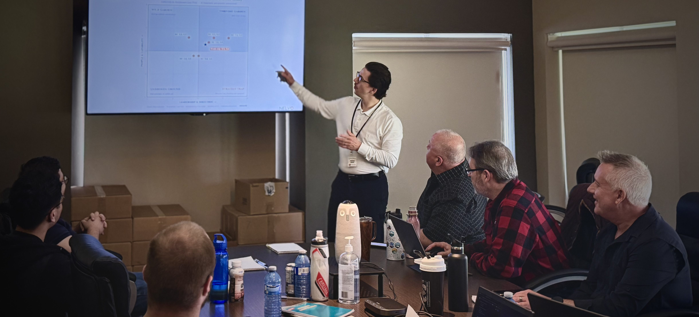

Your response is in.
Hunter will study your team's answers ahead of your session and shape the time around what they show.
The full picture is saved for the room: your whole team, looking at the same map, deciding what comes next.

Hunter will study your team's answers ahead of your session and shape the time around what they show.
The full picture is saved for the room: your whole team, looking at the same map, deciding what comes next.
